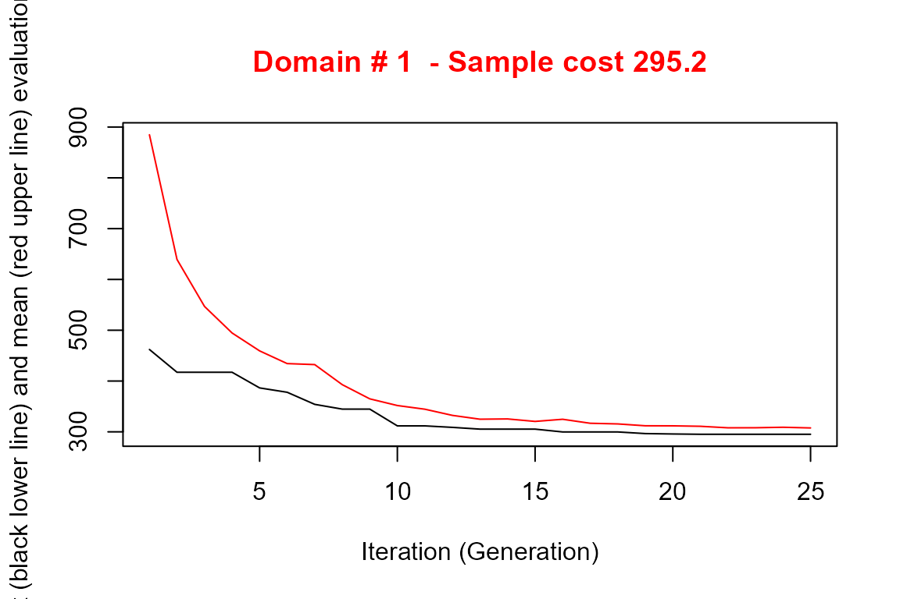

Use of models in SamplingStrata
Marco Ballin, Giulio Barcaroli
2021-11-15
Source:vignettes/models.Rmd
models.RmdHandling Anticipated Variance
When optimizing the stratification of a sampling frame, values of the target variables Y’s are supposed to be available for the generality of the units in the frame, or at least for a sample of them by means of which it is possible to estimate means and standard deviation of Y’s in atomic strata. Of course, this assumption is seldom expected to hold. The situation in which some proxy variables are available in the frame is much more likely to happen. In these situations, instead of directly indicating the real target variables, proxy ones are named as Y’s. By so doing, there is no guarantee that the final stratification and allocation can ensure the compliance to the set of precision constraints.
In order to take into account this problem, and to limit the risk of overestimating the expected precision levels of the optimized solution, it is possible to carry out the optimization by considering, instead of the expected coefficients of variation related to proxy variables, the anticipated coefficients of variation (ACV) that depend on the model that is possible to fit on couples of real target variables and proxy ones.
In the current implementation, the following restrictions hold:
- only models linking continuous variables can be considered;
- only linear or loglinear models;
- only one explanatory variable for each target variable.
The definition and the use of these models is the same that has been implemented in the package stratification (see Baillargeon and Rivest 2014).
In particular, the reference here is to two different models, the linear model with heteroscedasticity:
\[Z=\beta Y + \epsilon\]
where
\[\epsilon \sim N(0,\sigma^2 Y^\gamma)\]
(in case \(\gamma = 0\), then the model is homoscedastic)
and the loglinear model:
\[Z= \exp (\beta log(Y) + \epsilon)\]
where
\[\epsilon \sim N(0,\sigma^{2})\]
In SamplingStrata, the use of models to calculate the anticipated variance implies the execution of the following steps:
- for each couple target variable Z and available variable in the frame Y fit a model (linear or loglinear) using available data;
- in case of linear model, evaluate the heteroscedasticity of residuals (with the function computeGamma);
- with the above, define the model dataframe that is given as argument to the optimStrata function.
The model dataframe must contain a number of rows equal to the number of the Y variables.The coupling is positional: the first row refers to the Y1, the second row to Y2 and so on.
This is the structure of the model dataframe:
| Variable name | Description |
|---|---|
| type | Can assume one of the two values: linear or loglinear |
| beta | Contains the value of the beta coefficient in the fitted model |
| sig2 | Contains the value of the model variance. |
| It can be the squared value of sigma2 in the fitted model, or (only | |
| for linear models) in case of heteroscedasticity it can be | |
| calculated with the computeGamma function | |
| gamma | Only for linear model: contains the value of the heteroscedasticity |
| index (calculated with the computeGamma function) |
Handling heteroscedasticity in linear models
When dealing with linear models, an evaluation of the quantity of heteroscedasticity in the residuals is of the utmost importance in order to correctly evaluate the anticipated variance (see Henry and Valliant (2006) and Knaub (2019)). To this aim, a dedicated function has been developed: computeGamma. This function accepts as arguments the following:
- vector e of residuals;
- vector x of the values of the explanatory variable;
- number nbins of groups of residuals/values with which to fit a model.
The function produces a vector of 3 values:
- the heteroscedasticity index;
- the model standard deviation be used together with the heteroscedasticity index;
- the \(R^{2}\) of the fitted model used to estimate the two above values.
A suitable number to be given to the nbins parameter can be found by trying different values and choosing the one with which the value of the \(R^{2}\) is the highest. Experience shows that a choice of nbins ranging between 10 to 16 works quite well.
Example
Consider the following example, based on the dataset swissmunicipalities available in the package.
library(SamplingStrata)
data("swissmunicipalities")
swissmunicipalities$id <- c(1:nrow(swissmunicipalities))
swissmunicipalities$dom <- 1
head(swissmunicipalities[,c(3,4,5,6,7,10,23)])## REG COM Nom HApoly Surfacesbois Airbat POPTOT
## 1 4 261 Zurich 8781 2326 2884 363273
## 2 1 6621 Geneve 1593 67 773 177964
## 3 3 2701 Basel 2391 97 1023 166558
## 4 2 351 Bern 5162 1726 1070 128634
## 5 1 5586 Lausanne 4136 1635 856 124914
## 6 4 230 Winterthur 6787 2807 972 90483## HApoly Surfacesbois Airbat POPTOT
## HApoly 1.0000000 0.8094731 0.2075253 0.1060809
## Surfacesbois 0.8094731 1.0000000 0.2222185 0.1056776
## Airbat 0.2075253 0.2222185 1.0000000 0.9270286
## POPTOT 0.1060809 0.1056776 0.9270286 1.0000000Let us assume that in the sampling frame only variables total population (POPTOT) and total area (HApoly) are available for all municipalities, while buildings area (Airbat) and wooded area (Surfacesbois) are available only on a sample of 500 municipalities.
In this subset we can fit models between POPTOT and HAPOLY and the two variables that we assume are the target of our survey.
One model for buildings area and total population:
##
## Call:
## lm(formula = swiss_sample$Airbat ~ swiss_sample$POPTOT)
##
## Residuals:
## Min 1Q Median 3Q Max
## -143.380 -12.223 -4.391 7.336 208.728
##
## Coefficients:
## Estimate Std. Error t value Pr(>|t|)
## (Intercept) 1.968e+01 1.320e+00 14.90 <2e-16 ***
## swiss_sample$POPTOT 1.192e-02 2.854e-04 41.78 <2e-16 ***
## ---
## Signif. codes: 0 '***' 0.001 '**' 0.01 '*' 0.05 '.' 0.1 ' ' 1
##
## Residual standard error: 25.49 on 498 degrees of freedom
## Multiple R-squared: 0.778, Adjusted R-squared: 0.7776
## F-statistic: 1745 on 1 and 498 DF, p-value: < 2.2e-16and one model for wooded area and total area:
mod_Surfacesbois_HApoly <- lm(swiss_sample$Surfacesbois ~ swiss_sample$HApoly)
summary(mod_Surfacesbois_HApoly)##
## Call:
## lm(formula = swiss_sample$Surfacesbois ~ swiss_sample$HApoly)
##
## Residuals:
## Min 1Q Median 3Q Max
## -3979.1 -152.5 -87.7 98.0 2107.3
##
## Coefficients:
## Estimate Std. Error t value Pr(>|t|)
## (Intercept) 1.545e+02 1.921e+01 8.043 6.46e-15 ***
## swiss_sample$HApoly 1.997e-01 7.415e-03 26.932 < 2e-16 ***
## ---
## Signif. codes: 0 '***' 0.001 '**' 0.01 '*' 0.05 '.' 0.1 ' ' 1
##
## Residual standard error: 371.1 on 498 degrees of freedom
## Multiple R-squared: 0.5929, Adjusted R-squared: 0.5921
## F-statistic: 725.4 on 1 and 498 DF, p-value: < 2.2e-16We calculate the heteroscedasticity index and associated prediction standard error for both models:
Airbat <- computeGamma(mod_Airbat_POPTOT$residuals,
swiss_sample$POPTOT,
nbins = 10)
Airbat## gamma sigma r.square
## 0.6419641 0.1220129 0.9535845
Surfacesbois <- computeGamma(mod_Surfacesbois_HApoly$residuals,
swiss_sample$HApoly,
nbins = 10)
Surfacesbois## gamma sigma r.square
## 0.8911053 0.3582789 0.9931305We now proceed in building the model dataframe using the above models:
model <- NULL
model$beta[1] <- mod_Airbat_POPTOT$coefficients[2]
model$sig2[1] <- Airbat[2]^2
model$type[1] <- "linear"
model$gamma[1] <- Airbat[1]
model$beta[2] <- mod_Surfacesbois_HApoly$coefficients[2]
model$sig2[2] <- Surfacesbois[2]^2
model$type[2] <- "linear"
model$gamma[2] <- Surfacesbois[1]
model <- as.data.frame(model)
model## beta sig2 type gamma
## 1 0.01192162 0.01488715 linear 0.6419641
## 2 0.19970325 0.12836378 linear 0.8911053We define the sampling frame in this way:
frame <- buildFrameDF(swissmunicipalities,
id = "COM",
domainvalue = "dom",
X = c("POPTOT", "HApoly"),
Y = c("POPTOT", "HApoly"))
frame$Airbat <- swissmunicipalities$Airbat
frame$Surfacesbois <- swissmunicipalities$SurfacesboisNote that the explanatory variables in the models have been set as both target variables Y and stratification variables X.
(Since in this exercise the true values of the variables of interest are known for each unit of the population, they have been included in the frame in order to allow a performance evaluation in the next step. It is quite clear that this knowledge is not available in real cases.)
We set 5% precision constraint on both variables:
cv <- as.data.frame(list(DOM=rep("DOM1",1),
CV1=rep(0.05,1),
CV2=rep(0.05,1),
domainvalue=c(1:1)
))
cv## DOM CV1 CV2 domainvalue
## 1 DOM1 0.05 0.05 1We can now proceed with the optimization step:
set.seed(1234)
solution <- optimStrata(
method = "continuous",
errors = cv ,
framesamp = frame,
model = model,
iter = 25,
pops = 20,
parallel = FALSE,
nStrata = 5,
showPlot = FALSE,
writeFiles = FALSE)##
## Input data have been checked and are compliant with requirements
##
## *** Domain : 1 1
## Number of strata : 2896
## *** Sample cost: 295.1979
## *** Number of strata: 5
##
## *** Sample size : 296
## *** Number of strata : 5
## ---------------------------What about the expected CV’s? We attribute the real values of Airbat and Surfacesbois to the Ys of obtained framenew and run the simulation:
outstrata <- solution$aggr_strata
framenew <- solution$framenew
framenew$Y3 <- framenew$AIRBAT
framenew$Y4 <- framenew$SURFACESBOIS
results <- evalSolution(framenew, outstrata, 500, progress = FALSE)
results$coeff_var## CV1 CV2 CV3 CV4 dom
## 1 0.0369 0.0241 0.0352 0.0366 DOM1The first two CVs pertain to the proxy available variables, namely total population and total area, while the last two regard respectively buildings area and wooded area: they are more than compliant with the precision constraint of 5%.
What if we did not use the information contained in models? We run the same optimization step without indicating any model parameter:
set.seed(1234)
solution <- optimStrata(
method = "continuous",
errors = cv ,
framesamp = frame,
model = NULL,
iter = 25,
pops = 20,
parallel = FALSE,
nStrata = 5,
showPlot = FALSE,
writeFiles = FALSE)##
## Input data have been checked and are compliant with requirements
##
## *** Domain : 1 1
## Number of strata : 2896
## *** Sample cost: 151.9848
## *** Number of strata: 5
##
## *** Sample size : 152
## *** Number of strata : 5
## ---------------------------We obtain a solution that requires a much lower sample size to satisfy the precision constraints on the Ys. But as we did not consider the anticipated variance on the real target variables, we pay a price in terms of expected CVs on them:
outstrata <- solution$aggr_strata
framenew <- solution$framenew
framenew$Y3 <- framenew$AIRBAT
framenew$Y4 <- framenew$SURFACESBOIS
results <- evalSolution(framenew, outstrata, 500, progress = FALSE)
results$coeff_var## CV1 CV2 CV3 CV4 dom
## 1 0.0501 0.0491 0.0502 0.0686 DOM1Norwithstanding the non inclusion of the models in the optimization step, the CV related to buildings area is still inside the limit of the 5%: this is most likely due to the high correlation between buildings area and total population. While the lower correlation between the total area and woods area determines the non compliance of the expected CV of woods area that was instead guaranted using the related model.